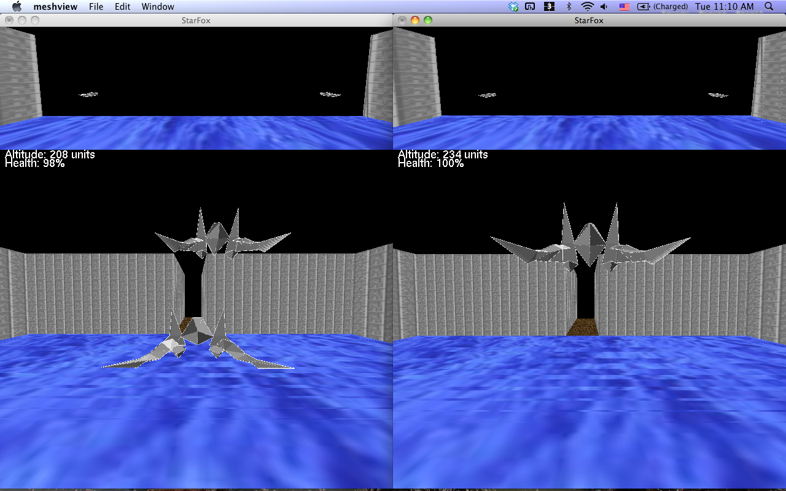
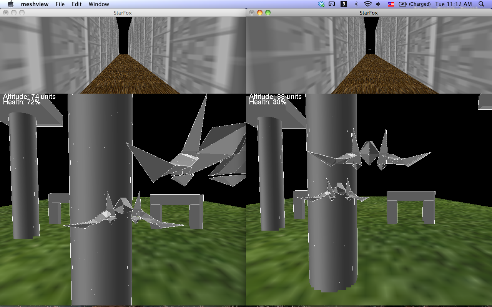

inview |
 outview |
 UpRight |
 DownLeft |
 hidden |
 appear |
2) Lighting and Smooth Shading
- OpenGL lighting and shading model We used techniques similar to those in assignment 3 to get the correct lighting model e.g. in the outview image above we can see the ship has diffeerent shading on its mesh because of the light position.
3) User Input
- Keyboard We use keyboard as the main input device for movement/view changes/pausing/shooting etc. We used other iput devices as well which are described in the advanced features section.
4) Computer Control over some elements of the scene
- Enemies The enemies are quite an elaborate feature of the game. When the enemies see your ship they try shooting at you with shooting rates dependent on the map position. There's an ongoing battle between the enemies and the user. The goal is to shoot down as many enemies as possible.
Advanced Features
1) Texture Mapping
- Texture Images using OpenGL Textures were incorporated as part of the scene file. In the images above we can see that we have textures on the walls, ground etc.
2) Multiple Views
- Front and Rear View The screen is split into two parts with the lower part giving the front view and the upper part giving the rear view.
 FrontCamera |
 RearCamera |
3) On-screen Control Panel
- Altitude and Health display The on screen control panel is simple and consists of altitude and health. Orthographic Projection was used for displaying text.
 SimpleControlPanel |
4) View Frustrum Culling
- Bounding Box Volumes This is done by computing bounding volumes. Culling accelerated the scene rendering by quite a lot.
5) Procedural and Physically based modelling
- Smoke using a particle engine Particle engines were used to create particle systems like smoke.
 smoke |
6) Collision detection
- Checking Bounding Volumes Collision detection was done by making bounding box checks. Collision detection is also done for enemies shooting lasers at us and viceversa. So if the enemy laser hits us the health goes down and this is done by bounding box checks. Similarly if we shoot at the enemies, their health goes down and they start sinking after a certain number of hits.
7) Other Input Devices
- Xbox Controller To provide a better gaming experience an Xbox controller was used as another input device. This was done by mapping the Xbox controls to the correct keyboard controls.
8) Networked Multiplayer cabability
- Collaborative Play We have mutliplayer capability for our game as well which allows for collaborative play over the network.
|
 Networking1 |
 Networking2 |
{kind=link}
{kind=link}